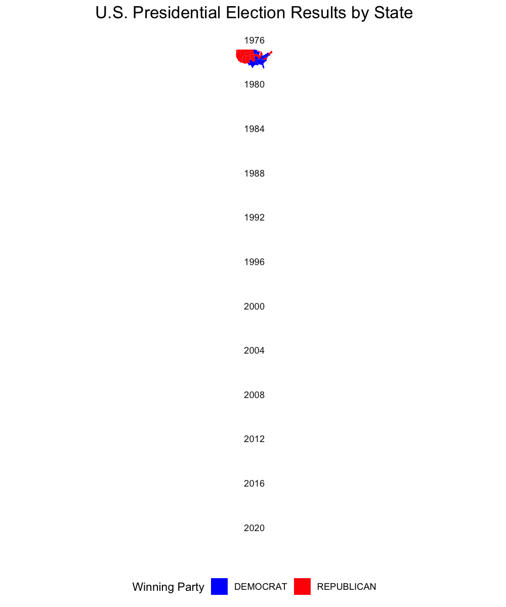

# Let's Install the libraries
if (!require(tidyverse)) install.packages("tidyverse")
if (!require(readr)) install.packages("readr")
if (!require(sf)) install.packages("sf")
if (!require(httr)) install.packages("httr")
if (!require(zip)) install.packages("zip")
if (!require(patchwork)) install.packages("patchwork")
if (!require(ggrepel)) install.packages("ggrepel")
if (!require(gganimate)) install.packages("gganimate")
if (!require(scales)) install.packages("scales")
if (!require(magick)) install.packages("magick")
# Let's Load the Libraries
library(tidyverse)
library(readr)
library(sf)
library(httr)
library(zip)
library(patchwork)
library(ggrepel)
library(gganimate)
library(ggplot2)
library(scales)
library(magick)Mini project 03
TOPIC : Do Proportional Electoral College Allocations Yield a More Representative Presidency?
Introduction
For this project I will analyze whether the U.S. Electoral College provides a fair and representative outcome in presidential elections, particularly when different allocation methods are used. The findings will be presented in the form of a fact-checking report, analyzing claims of bias within the Electoral College and assessing how allocation rules influence election results.
setup libraries needed for analysis
To prepare for the analysis in this project, I am setting up and loading several R libraries that are essential for data manipulation, visualization, spatial analysis, and animation. This will ensure I have the tools needed for a comprehensive analysis of electoral data and effective, dynamic visualizations.
Manually Download us_house_votes.csv and president.csv.
Following the project instructions, I manually downloaded two key datasets from the MIT Election Data Science Lab using my web browser. The us_house_votes.csv for U.S. House election votes (1976-2022) and president.csv for presidential votes (1976-2020). I saved these locally and loaded them into R for the analysis. I also used suppressMessages for cleaner output.
# Load votes data and election data
house_vote_data <- suppressMessages(read_csv("mp03data/1976-2022-house.csv"))
presidential_election_data <- suppressMessages(read_csv("mp03data/1976-2020-president.csv"))
Task 1: Download Congressional Shapefiles 1976-2012
Download data from 1976-2012
Now I will automate download and extraction of shapefiles that contain the boundaries of U.S. congressional districts for each election year from 1976 to 2012. The data is sourced from Here For instance, the 94th Congress, spanning January 14, 1975, to October 1, 1976, is labeled ‘094’ in file names so I’ll use sprintf to format each Congress number as a three-digit code (e.g., ‘094’ for the 94th Congress), applying the same approach for all election years. Additionally, I will store the file location for each year.
# Create a empty list - congressional_boundaries_shape_file_location_map to store, to store the mapping of each election year to the download location of its corresponding shapefile.
congressional_boundaries_shape_file_location_map <- list()
# Now I’m setting the starting year as 1976, as specified in the project guidelines.
starting_year <- 1976
# I created the get_congressional_boundaries_shape_files() function to automate downloading, storing, and extracting shapefiles for each congressional session based on the specified Congress number. Also,use sprintf.
get_congressional_boundaries_shape_files <- function(congress) {
congress_number <- sprintf("%03d", congress)
# Set base URL and file name pattern
base_url <- "https://cdmaps.polisci.ucla.edu/shp/"
file_name <- paste0("districts", congress_number, ".zip")
# file_download_location is a local path where each zip file will be saved.
file_download_location <- paste0("mp03data/zip_files/", congress_number, ".zip")
# To calculate the election year based on the Congress number.
election_year <- starting_year + (congress - 94) * 2
# store file location for given year
congressional_boundaries_shape_file_location_map[[election_year]] <<- file_download_location
# Unzip and load the shape file
unzip_dir <- paste0("mp03data/shp_data/", congress_number, "/")
# Only download if the file does not already exist
if (!file.exists(file_download_location)) {
file_url <- paste0(base_url, file_name)
dir.create("mp03data/zip_files", recursive = TRUE)
download.file(file_url, destfile = file_download_location, mode = "wb")
}
unzip(file_download_location, exdir = unzip_dir)
}
# This loop iterates each Congress from 1976 to 2012, covering the period from 1976 (94th Congress) to 2012 (112th Congress).
for (congress in 94:112) {
get_congressional_boundaries_shape_files(congress)
}
Task 2: Download Congressional Shapefiles 2014-2022
Download Congressional data from 2014-2022
let’s ensure that the data for congressional boundaries from 2014 to 2022 is downloaded and organized efficiently, ready for further use in analysis. Also, the name of the files Here are ending with these numbers- “118”, “116”, “115”, “114” so, I checked each version in sequence until it finds one that works for a specific year.
# This will be the template for the URL where the shapefiles are stored
base_url_template <- "https://www2.census.gov/geo/tiger/TIGER%d/CD/tl_%d_us_cd%s.zip"
# The code will try each version in sequence until it finds one that works for a specific year.
versions <- c("118", "116", "115", "114")
# Specified the folder where the files will be saved.
download_dir <- "mp03data"
# Create directory for saving shapefiles if it doesn't exist
if (!dir.exists(download_dir)) {
dir.create(download_dir)
}
# Now Looping through years 2014:2022
for (year in 2014:2022) {
file_downloaded <- FALSE
# Try each version until one succeeds
for (version in versions) {
# Construct the file name and URL using sprintf
file_name <- paste0("congressional_districts_", year, "_cd", version, ".zip")
file_path <- file.path(download_dir, file_name)
url <- sprintf(base_url_template, year, year, version)
# Check if file already exists to avoid re-downloading
if (!file.exists(file_path)) {
# Perform the download
response <- GET(url)
if (status_code(response) == 200) {
# Write the downloaded content to a file
writeBin(content(response, "raw"), file_path)
# store file location for given year
congressional_boundaries_shape_file_location_map[[year]] <- file_path
}
} else {
# store file location for given year
congressional_boundaries_shape_file_location_map[[year]] <- file_path
break
}
}
}
Task 3: Exploration of Vote Count Data Answer the following using the vote count data files from the MIT Election Data Science Lab. You may answer each with a table or plot as you feel is appropriate.
3.1. Which states have gained and lost the most seats in the US House of Representatives between 1976 and 2022?
This identifies the states with the largest gains and losses in seats and visualizes these changes with a bar plot. Firstly, I filtered the data to include seat counts for each state in those years. I calculated the difference in seats (seat_change) for each state and identified the top 10 states with the largest gains and losses Then, I created a bar plot showing these changes, using green bars for gains and red bars for losses, with each bar labeled by the number of seats changed. Please follow the short notes with the code to understand it.
# Load the data from year 1976 to 2022- representing U.S. House elections
seats_by_state <- house_vote_data |>
filter(year %in% c(1976, 2022), office == "US HOUSE") |>
group_by(state, year) |>
summarise(seat_count = n_distinct(district), .groups = "drop")
# calculate the change in seats between 1976 and 2022 for each state.
seat_changes <- seats_by_state |>
filter(year %in% c(1976, 2022)) |>
pivot_wider(names_from = year, values_from = seat_count, names_prefix = "year_")
# Let's create new column to show the difference in seats
top_gains_losses <- seat_changes |>
mutate(seat_change = year_2022 - year_1976) |>
arrange(desc(seat_change)) |>
filter(row_number() <= 10 | row_number() > (n() - 10))
# To show the plot, mapping the states (state) to the x-axis and seat_change to the y-axis.
ggplot(top_gains_losses, aes(x = reorder(state, seat_change), y = seat_change, fill = seat_change > 0)) +
geom_bar(stat = "identity", color = "black") +
coord_flip() +
geom_text(aes(label = seat_change), hjust = ifelse(top_gains_losses$seat_change > 0, -0.2, 1.2), size = 3) +
scale_fill_manual(values = c("red", "green"), labels = c("Loss", "Gain"), guide = guide_legend(title = "Seat Change")) +
labs(
title = "Top 10 Seat Gains and Losses in the US House of Representatives (1976-2022)",
x = "State", y = "Seat Change"
) +
theme_minimal() +
theme(
legend.position = "top",
plot.title = element_text(size = 10, face = "bold"),
axis.text.y = element_text(size = 10)
)This chart shows the top 10 states with the most significant changes in U.S. House seats from 1976 to 2022. Texas and Florida gained the most seats (14 and 13), reflecting population growth in the South and West. In contrast, New York and Ohio lost the most seats (13 and 8), indicating population decline in the Northeast and Midwest. This shift redistributes political influence toward states with growing populations.
3.2. New York State has a unique “fusion” voting system where one candidate can appear on multiple “lines” on the ballot and their vote counts are totaled. For instance, in 2022, Jerrold Nadler appeared on both the Democrat and Working Families party lines for NYS’ 12th Congressional District. He received 200,890 votes total (184,872 as a Democrat and 16,018 as WFP), easily defeating Michael Zumbluskas, who received 44,173 votes across three party lines (Republican, Conservative, and Parent). Are there any elections in our data where the election would have had a different outcome if the “fusion” system was not used and candidates only received the votes their received from their “major party line” (Democrat or Republican) and not their total number of votes across all lines?
let’s analyze New York’s U.S. House elections (1976 onward) to see if any outcomes would have differed without the “fusion” voting system. It calculates each candidate’s total votes (across all party lines) and votes from only their major party line (Democrat or Republican). It then compares the actual winner (fusion votes) with a hypothetical winner (major party votes only) and displays cases where the outcome would have changed if fusion votes weren’t counted.
library(dplyr)
# Filter for New York and US HOUSE elections of Representatives from 1976 onwards
ny_elections <- house_vote_data |>
filter(state == "NEW YORK", office == "US HOUSE", year >= 1976)
# Identify major party line (Democrat or Republican) and calculate total votes for each candidate
candidate_votes <- ny_elections |>
mutate(is_major_party = ifelse(party %in% c("DEMOCRAT", "REPUBLICAN"), TRUE, FALSE)) |>
group_by(year, district, candidate) |>
summarise(
total_votes = sum(candidatevotes),
major_party_votes = sum(candidatevotes[is_major_party]),
.groups = "drop"
)
# Determine the actual winner and hypothetical winner if only major party line votes were counted
candidate_votes |>
group_by(year, district) |>
summarise(
fusion_winner = candidate[which.max(total_votes)],
major_party_winner = candidate[which.max(major_party_votes)],
fusion_votes = max(total_votes),
major_party_votes = max(major_party_votes),
.groups = "drop"
) |>
filter(fusion_winner != major_party_winner) |>
select(year, district, fusion_winner, major_party_winner, fusion_votes, major_party_votes) |>
DT::datatable()“fusion_winner” is the candidate who actually won with combined votes from all party lines. “major_party_winner” is the hypothetical winner who would have won if only votes from major parties were counted.
3.3.Do presidential candidates tend to run ahead of or run behind congressional candidates in the same state? That is, does a Democratic candidate for president tend to get more votes in a given state than all Democratic congressional candidates in the same state? Does this trend differ over time? Does it differ across states or across parties? Are any presidents particularly more or less popular than their co-partisans?
let’s compare the total votes for Democratic and Republican candidates in presidential and congressional elections (U.S. House) during presidential election years (1976 to 2020) and how this trend varies over time.
# Define presidential election years from 1976 to 2020 for our analysis
presidential_years <- seq(1976, 2020, by = 4)
# let's use filter and group by to sum presidential votes by state, year, and party
presidential_votes <- presidential_election_data |>
filter(party_simplified %in% c("DEMOCRAT", "REPUBLICAN"), year %in% presidential_years) |>
group_by(year, state, party_simplified) |>
summarize(total_votes = sum(candidatevotes), .groups = "drop") |>
mutate(party = party_simplified) |>
select(year, state, party, total_votes)
# Here I am trying to filter for U.S. House elections in presidential years, considering only Democratic and Republican votes
congressional_votes <- house_vote_data |>
filter(office == "US HOUSE", party %in% c("DEMOCRAT", "REPUBLICAN"), year %in% presidential_years) |>
group_by(year, state, party) |>
summarize(total_votes = sum(candidatevotes), .groups = "drop")
# Rename columns to differentiate between President and Congress election data
presidential_votes <- presidential_votes |>
mutate(election_type = "President")
congressional_votes <- congressional_votes |>
mutate(election_type = "Congress")
# Combine presidential and congressional votes into a single dataset- combined_votes
combined_votes <- bind_rows(presidential_votes, congressional_votes)
votes_summary <- combined_votes |>
group_by(year, party, election_type) |>
summarize(total_votes = sum(total_votes), .groups = "drop")
# Now lets combine into one interaction_label for plotting
votes_summary <- votes_summary |>
mutate(interaction_label = factor(interaction(party, election_type),
levels = c("DEMOCRAT.President", "DEMOCRAT.Congress",
"REPUBLICAN.President", "REPUBLICAN.Congress")))
# Plot the data
ggplot(votes_summary, aes(x = year, y = total_votes, color = interaction_label)) +
geom_line(size = 1) +
labs(
title = "Total Votes by Party and Election Type (Presidential and Congressional)",
x = "Year",
y = "Total Votes",
color = "Party and Election Type"
) +
scale_color_manual(
values = c(
"DEMOCRAT.President" = "blue",
"DEMOCRAT.Congress" = "darkblue",
"REPUBLICAN.President" = "red",
"REPUBLICAN.Congress" = "darkred"
),
labels = c(
"Democrat - President",
"Democrat - Congress",
"Republican - President",
"Republican - Congress"
)
) +
# Use comma format for y-axis labels- for readability
scale_y_continuous(labels = scales::comma) +
theme_minimal() +
theme(
plot.title = element_text(hjust = 0.5, size = 10),
axis.text.x = element_text(angle = 40, hjust = 1)
)
Over time, total votes for both presidential and congressional races have steadily increased, reflecting higher voter turnout or population growth.
Task 4: Automate Zip File Extraction Adapt the code after the ##- symbol above into a function read_shp_from_zip() which takes in a file name, pulls out the .shp file contained there in, and reads it into R using read_sf().
The purpose of this process is to make it easier to work with shapefiles that are stored in zip files. Instead of manually unzipping the file, locating the shapefile, and loading it into R, this function does it all in one step. This approach is helpful because I will be working with geographic data from various sources.
# Define a function for automated downloading and reading of shapefiles
read_shp_from_zip <- function(zip_file) {
# Create a temporary directory to extract files
temp_dir <- tempdir()
# Extract all contents of the zip file to the temporary directory
zip_contents <- unzip(zip_file, exdir = temp_dir)
# Defining the path where shapefiles should be located, ensures shapefiles are matched
shp_file_location <- paste0(temp_dir, "/districtShapes/")
shp_files <- list.files(shp_file_location, pattern = "\\.shp$", full.names = TRUE)
# Check if a .shp file is found
if (length(shp_files) == 0) {
stop("No .shp file found in the zip archive.")
}
# Read the .shp file as a simple feature collection
shp_sf <- suppressMessages(read_sf(shp_files[1])) # Read the first .shp file if multiple are found
# This will return the spatial data (shp_sf) so it can be used in further analysis or visualization.
return(shp_sf)
}Custom Functions
Let’s create custom functions that will be useful later for the analysis.
Create function to get election year data.
This function will give us all the data related to an election year. Things like total votes, electoral vote count. It will extract data for that year, focusing on the two main parties (Democratic and Republican).
# This represents which election year I wanna analyze
create_election_year_data <- function(year_to_look_for) {
# Filter presidential data for the specified year and the two main parties
president_data_for_given_year <- presidential_election_data |>
filter(
year == year_to_look_for,
office == "US PRESIDENT",
party_simplified %in% c("DEMOCRAT", "REPUBLICAN")
) |>
# This groups the data by state
group_by(state) |>
# Selects candidate with max vote
slice_max(candidatevotes, n = 1, with_ties = FALSE) |>
# Select the relevant columns
select(state, state_po, candidate, party_simplified, candidatevotes)
# Filter congressional vote count data for the specified year and summarize Electoral College Votes (ECV)
ecv_data_for_given_year <- house_vote_data |>
filter(year == year_to_look_for, office == "US HOUSE") |>
group_by(state) |>
summarize(
num_representatives = n_distinct(district),
# +2 is to count 2 senators for each state
ecv = num_representatives + 2,
.groups = "drop"
) |>
# Add DC manually with its 3 electoral votes
bind_rows(data.frame(state = "DISTRICT OF COLUMBIA", ecv = 3))
# Combine presidential data with ECV data and format state names
combined_data <- president_data_for_given_year |>
# Left_join will merge
left_join(ecv_data_for_given_year, by = "state") |>
# Formats state names to title case
mutate(state = str_to_title(state))
return(combined_data)
}This code will help to retrieve relevant information for election analysis, comparisons, or visualization.
Function to get shp_data for a given year.
This code is designed to prepare state-level shapefile data for a specified year.
# Let's create function to take an argument(year)
create_state_shp_data <- function(year) {
# find file location for a given year
file_location_for_given_year <- congressional_boundaries_shape_file_location_map[[year]]
# This calls the previously defined function (read_shp_from_zip) to extract and load the shapefile data for the specified year
shp_data_for_given_year <- read_shp_from_zip(file_location_for_given_year)
# Standardize STATENAME to title case
congressional_districts_for_given_year <- shp_data_for_given_year |>
mutate(STATENAME = str_to_title(trimws(STATENAME))) |> # Convert to title case (e.g., "new york" becomes "New York")
rename(state = STATENAME) |> # Rename column to 'state' for consistency
select(state, geometry) |> #select the given column
st_make_valid()
# Let's aggregate the individual congressional districts into a single geometry for each state
state_level_shape_for_given_year <- congressional_districts_for_given_year |>
group_by(state) |> # groupby state
reframe(geometry = st_union(geometry)) |> # Use reframe to handle ungrouping automatically
distinct(state, .keep_all = TRUE) # Ensure unique entries remain for each state
return(state_level_shape_for_given_year)
}The create_state_shp_data function efficiently retrieves and processes shapefile data, combining individual congressional districts into state-level geometries for a specified year. This function is useful for generating state-level spatial data for maps and analyses where district-level detail is not required, ensuring consistency in state names and valid geometry.
Define function to create and save a map for a specific year
Now working to create a customized election map for a given year. This map visualizes each state, showing which party won the state’s electoral votes, with color-coded states representing the winning party (Democrat, Republican, or Other).
create_election_map <- function(election_year_data, shp_data_for_year, year_num, file_name = NULL) {
yearly_data <- shp_data_for_year |>
inner_join(election_year_data, by = "state")
# Define the small northeastern states to display abbreviations outside
yearly_data <- yearly_data |>
mutate(
state_abbr = ifelse(state %in% c(
"Connecticut", "Delaware", "Maryland", "Massachusetts",
"New Jersey", "New Hampshire", "Rhode Island", "Vermont"
), state_po, NA), # Use abbreviations only for small northeastern states
label_text = ifelse(!is.na(state_abbr), paste0(state_abbr, " ", ecv), NA)
)
northeastern_states <- c(
"Connecticut", "Delaware", "Maryland", "Massachusetts",
"New Jersey", "New Hampshire", "Rhode Island", "Vermont"
)
if (!inherits(yearly_data, "sf")) {
yearly_data <- st_as_sf(yearly_data)
}
# Prepare the main map excluding Alaska and Hawaii
mainland <- yearly_data |> filter(!state %in% c("Alaska", "Hawaii"))
alaska <- yearly_data |> filter(state == "Alaska")
hawaii <- yearly_data |> filter(state == "Hawaii")
mainland_plot <- ggplot(mainland) +
geom_sf(aes(fill = party_simplified)) +
# Only show electoral votes for non-northeastern states
geom_sf_text(
data = mainland |> filter(!state %in% northeastern_states),
aes(label = ecv), size = 6, color = "black", fontface = "bold"
) +
# Add labels for small northeastern states with electoral counts outside
geom_text_repel(
data = yearly_data |> filter(!is.na(state_abbr)), # Only for small northeastern states
aes(
geometry = geometry,
label = label_text
),
stat = "sf_coordinates", # Use spatial coordinates for label placement
size = 4,
color = "black",
fontface = "bold", # Make labels bold
nudge_x = 5, # Set a strong rightward nudge to move all labels to the right
nudge_y = 0, # Keep y-nudging minimal for alignment
hjust = 0, # Left-align labels
direction = "y", # Keep lines vertically aligned
lineheight = 0.9 # Adjust line height for clarity if needed
) +
scale_fill_manual(values = c("DEMOCRAT" = "blue", "REPUBLICAN" = "red", "Other" = "gray")) +
labs(
title = paste0(year_num, " Presidential Election - Electoral College Results"),
fill = "Winner"
) +
theme_minimal() +
theme(
plot.title = element_text(hjust = 0.5, size = 20, face = "bold"), # Bold title
legend.position = "bottom"
) +
coord_sf(expand = FALSE)
# Alaska plot without legend
alaska_plot <- ggplot(alaska) +
geom_sf(aes(fill = party_simplified)) +
geom_sf_text(aes(label = ecv), size = 6, color = "black", fontface = "bold") +
scale_fill_manual(values = c("DEMOCRAT" = "blue", "REPUBLICAN" = "red", "Other" = "gray")) +
theme_void() +
theme(legend.position = "none") + # Hide legend in Alaska inset
coord_sf(xlim = c(-180, -130), ylim = c(50, 72), expand = FALSE)
# Hawaii plot without legend
hawaii_plot <- ggplot(hawaii) +
geom_sf(aes(fill = party_simplified)) +
geom_sf_text(aes(label = ecv), size = 6, color = "black", fontface = "bold") +
scale_fill_manual(values = c("DEMOCRAT" = "blue", "REPUBLICAN" = "red", "Other" = "gray")) +
theme_void() +
theme(legend.position = "none") + # Hide legend in Hawaii inset
coord_sf(xlim = c(-161, -154), ylim = c(18, 23), expand = FALSE)
# Combine plots using patchwork with adjusted insets on bottom left
combined_plot <- mainland_plot +
inset_element(alaska_plot, left = 0.05, bottom = 0.1, right = 0.25, top = 0.3) + # Alaska on bottom left
inset_element(hawaii_plot, left = 0.05, bottom = 0.05, right = 0.25, top = 0.15) # Hawaii below Alaska on bottom left
# Save plot
if (is.null(file_name)) {
ggsave(filename = paste0("mp03data/election_maps/election_map_", year_num, ".png"), plot = combined_plot, width = 16, height = 12, dpi = 300)
}else{
ggsave(filename = file_name, plot = combined_plot, width = 16, height = 12, dpi = 300)
}
}Now it efficiently generates an electoral map for a specified year, incorporating color-coded party winners, labels for small northeastern states, and Alaska and Hawaii as inset maps. This automation produces detailed visualizations of election results, making it ideal for presentations or reports on electoral data.
Task 5: Chloropleth Visualization of the 2000 Presidential Election Electoral College Results
I will now generate an electoral map for the 2000 presidential election. I have also included a step-by-step explanation of what each line does:
# Calls the function with 2000 as the argument to generate data for the 2000 presidential election
election_year_data <- create_election_year_data(2000)
# The argument to create spatial data for each state in 2000 by combining congressional district geometries into state-level boundaries.
election_year_shp_data <- create_state_shp_data(2000)
# To create and save a map of the 2000 presidential election
create_election_map(election_year_data, election_year_shp_data, 2000, "election_map_2000.png")
# Display the Map in the Document
knitr::include_graphics("election_map_2000.png")This map shows the results of the 2000 U.S. Presidential Election by state, indicating the winner in each state along with the electoral college votes (ECV) awarded Where Red: States won by the Republican candidate. Blue: States won by the Democratic candidate.
Task 6: OPTIONAL FOR EXTRA CREDIT : Advanced Chloropleth Visualization of Electoral College Results Modify your previous code to make either an animated version showing election results over time.
Now I will work to create an animated choropleth map of U.S. Electoral College results from 1976 to 2022. I Will be using the magick package for image loading.
library(magick)
# Define election years
years <- seq(1976, 1978, by = 4)
# Now iterate over each year and retrieve the file location
for (year in years) {
shp_data_for_year <- create_state_shp_data(year)
election_year_data <- create_election_year_data(year)
yearly_data <- shp_data_for_year |>
inner_join(election_year_data, by = "state")
# print(yearly_data)
create_election_map(election_year_data, shp_data_for_year, year)
}
# Load all PNG images and create a GIF
images <- list.files(path = "mp03data/election_maps", pattern = "*.png", full.names = TRUE)
gif <- image_read(images) # Read all images
animated_gif <- image_animate(gif, fps = 1)
# Save the animated GIF
image_write(animated_gif, "election_map_animation.gif")
knitr::include_graphics("election_map_animation.gif")This animated choropleth map effectively visualizes shifts in Electoral College results across multiple election cycles, offering insights into changes in state-level support over time.
Task 6: Advanced Chloropleth Visualization of Electoral College Results} ### 6. Modify your previous code to make either an animated faceted version showing election results over time. You may want to set facet_wrap or facet_grid to use a single column and adjust the figure size for the best reading experience
Here I will created an animated, faceted map to visualize U.S. presidential election results over time. I prepared the election and geographic data for each election year from 1976 to 2020, merging shapefiles of U.S. states with election results to color each state by the winning party. Using facet_wrap, I created a one-column layout to display each year individually, while transition_manual provided smooth transitions between years for animation. Finally, I saved the animation as a GIF, adjusting plot settings to produce a clean, focused view of each year’s results, effectively illustrating shifts in electoral outcomes over time.
# Define a function to generate and save an animated, faceted electoral map
create_animated_facet_map <- function(all_year_data) {
# Combine data from all years into one data frame for animation
combined_data <- bind_rows(all_year_data)
# Check if the combined_data is in the correct format (as an sf object)
if (!inherits(combined_data, "sf")) {
combined_data <- st_as_sf(combined_data)
}
# Set up the plot using ggplot2 with faceting for each year
p <- ggplot(combined_data) +
geom_sf(aes(fill = party_simplified), color = NA) +
scale_fill_manual(values = c("DEMOCRAT" = "blue", "REPUBLICAN" = "red", "Other" = "gray")) +
labs(
title = "U.S. Presidential Election Results by State",
subtitle = "Year: {closest_state}",
fill = "Winning Party"
) +
theme_minimal() +
theme(
plot.title = element_text(hjust = 0.5, size = 16, face = "bold"),
legend.position = "bottom",
axis.text = element_blank(), # Remove coordinate labels
axis.ticks = element_blank(), # Remove axis ticks
panel.grid = element_blank() # Remove grid lines
) +
facet_wrap(~year, ncol = 1, scales = "fixed") + # Single column, fixed scales
coord_sf(xlim = c(-125, -66), ylim = c(24, 50), expand = FALSE) + # Adjusted limits for U.S.
transition_manual(year)
# Animate the plot with increased dimensions
animated_plot <- animate(p, nframes = length(unique(combined_data$year)), fps = 1, width = 1000, height = 1200, res = 150)
# Save the animation as a GIF
anim_save("election_results_facet_animation.gif", animated_plot)
}
# Loop to prepare the data for each year and call the function to animate
years <- seq(1976, 2022, by = 4)
all_year_data <- list()
# for (year in years) {
# # Assuming create_state_shp_data and create_election_year_data functions exist as per Task 5
# shp_data_for_year <- create_state_shp_data(year)
# election_year_data <- create_election_year_data(year)
#
# # Combine shapefile data with election data
# yearly_data <- shp_data_for_year %>%
# left_join(election_year_data, by = "state") %>%
# mutate(year = year) # Add year column for facetting
#
# # Append yearly data to the list for later animation
# all_year_data[[as.character(year)]] <- yearly_data
# }
# Call the animation function
# create_animated_facet_map(all_year_data)
# Display the animation
knitr::include_graphics("election_results_facet_animation.gif")
Result shows the animated, faceted visualization highlights the shifting political landscape of the U.S. over several decades, providing a clear view of how electoral outcomes have changed across different presidential elections.
::: ::: {.callout-tip title=“Task 7: Evaluating Fairness of ECV Allocation Schemes”}
7.1. State-Wide Winner-Take-All
Let’s calculate State-Wide Winner-Take-All to examine which party receives all of a state’s ECVs based on a simple majority, we can understand potential biases in the current system and assess its representativeness.
# Filter house_vote_data to only include presidential election years (every 4 years)
house_vote_data_president_election_year <- house_vote_data |>
filter(year %% 4 == 0)
# Filter presidential_election_data to only include presidential election years (every 4 years)
presidential_election_data <- presidential_election_data |>
filter(year %% 4 == 0)
# Deduct ECV data from the filtered congressional data and add DC manually
ecv_data <- house_vote_data_president_election_year |>
filter(office == "US HOUSE") |>
group_by(state, year) |>
summarize(
num_representatives = n_distinct(district),
ecv = num_representatives + 2,
.groups = "drop"
) |>
bind_rows(data.frame(state = "DISTRICT OF COLUMBIA", year = unique(house_vote_data_president_election_year$year), ecv = 3))
# Ensure candidate votes are numeric in presidential_election_data
presidential_election_data <- presidential_election_data |>
mutate(candidatevotes = as.numeric(candidatevotes))
# 1. State-Wide Winner-Take-All Allocation
winner_take_all <- presidential_election_data |>
group_by(year, state) |>
slice_max(candidatevotes, with_ties = FALSE) |>
ungroup() |>
left_join(ecv_data, by = c("state", "year")) |>
mutate(ecv_allocation = ecv, allocation_scheme = "State-Wide Winner-Take-All") |>
select(year, state, party_simplified, ecv_allocation, allocation_scheme)
winner_take_all_summary <- winner_take_all |>
group_by(year, party_simplified) |>
summarize(total_ecv = sum(ecv_allocation), .groups = "drop")
# I am sorting and searching
winner_take_all_summary |>
DT::datatable()The table displayed here shows the results of the State-Wide Winner-Take-All allocation system for each U.S. presidential election year. The fluctuations in total ECVs show the changing dominance of parties over time and how closely contested certain election years were.
7.2. District-Wide Winner-Take-All + State-Wide “At Large” Votes
let’s calculate District-Wide Winner-Take-All + State-Wide “At Large” Votes. This will help to evaluate how district-level and at-large ECV allocations could impact the distribution of ECVs in U.S. presidential elections compared to a purely winner-take-all state system.
# 1. Calculate District-Level ECV Allocation for Each State (excluding DC since it has no districts)
district_winner_take_all <- house_vote_data_president_election_year |>
filter(office == "US HOUSE", state != "DISTRICT OF COLUMBIA") |> # Only states with congressional districts
group_by(year, state, district) |>
slice_max(candidatevotes, with_ties = FALSE) |> # Get the candidate with the most votes in each district
ungroup() |>
mutate(ecv_allocation = 1) |> # Each district winner receives 1 ECV
mutate(party_simplified = party)
# 2. Calculate Statewide "At Large" ECV Allocation for Each State
at_large_votes <- presidential_election_data |>
filter(state != "DISTRICT OF COLUMBIA") |> # Exclude DC here for now
group_by(year, state) |>
slice_max(candidatevotes, with_ties = FALSE) |> # Get the candidate with the most votes statewide
ungroup() |>
mutate(ecv_allocation = 2) # Statewide winner receives 2 "at-large" ECVs
# 3. Add DC’s Fixed 3 ECVs with Winner-Take-All Allocation
dc_winner_take_all <- presidential_election_data |>
filter(state == "DISTRICT OF COLUMBIA") |> # Only DC
group_by(year, state) |>
slice_max(candidatevotes, with_ties = FALSE) |> # Get the candidate with the most votes in DC
ungroup() |>
mutate(ecv_allocation = 3) # DC winner receives all 3 ECVs
# 4. Combine District-Level, Statewide At-Large, and DC Allocations for All States
nationwide_district_allocation <- bind_rows(district_winner_take_all, at_large_votes, dc_winner_take_all) |>
mutate(allocation_scheme = "Nationwide District-Wide Winner-Take-All + At-Large") |>
select(year, state, district, party_simplified, ecv_allocation, allocation_scheme)
# Summarize the results by year and party to see the national impact
district_allocation_summary <- nationwide_district_allocation |>
group_by(year, party_simplified) |>
summarize(total_ecv = sum(ecv_allocation), .groups = "drop") |>
arrange(year, desc(total_ecv))
# Display the national summary to see the overall outcome by party
district_allocation_summary |>
DT::datatable()7.3. State-Wide Proportional Allocation
This code calculates Electoral College Votes (ECV) using a State-Wide Proportional Allocation. We first determine each party’s vote share within each state, then allocate ECVs proportionally. Afterward, we adjust for any rounding differences to ensure each state’s total ECV is correct. Finally, we summarize the results nationally to compare total ECVs for each party in each election year, offering a fairer reflection of each party’s support within states.
# Join proportional_state with ecv_data to get total ECVs for each state-year combination
proportional_state <- presidential_election_data |>
group_by(year, state, party_simplified) |>
summarize(total_party_votes = sum(candidatevotes), .groups = "drop") |>
left_join(ecv_data, by = c("state", "year")) |>
group_by(year, state) |>
mutate(
vote_share = total_party_votes / sum(total_party_votes), # Calculate each party's vote share
proportional_ecv = round(vote_share * ecv), # Proportionally allocate ECVs
allocation_scheme = "State-Wide Proportional"
) |>
ungroup() |>
select(year, state, party_simplified, ecv, proportional_ecv, allocation_scheme)
# Adjust to ensure each state's total ECV allocation matches exactly
proportional_state_adjusted <- proportional_state |>
group_by(year, state) |>
mutate(
adjustment = ecv - sum(proportional_ecv), # Calculate any rounding difference
proportional_ecv = if_else(row_number() == 1, proportional_ecv + adjustment, proportional_ecv) # Adjust the first row
) |>
ungroup() |>
select(year, state, party_simplified, proportional_ecv, allocation_scheme)
# Summarize the results by year and party to see the national impact
proportional_state_summary <- proportional_state_adjusted |>
group_by(year, party_simplified) |>
summarize(total_ecv = sum(proportional_ecv), .groups = "drop") |>
arrange(year, desc(total_ecv))
# Display the national summary to see the overall outcome by party
proportional_state_summary |>
DT::datatable()The State-Wide Proportional Allocation method more accurately reflects voter support by allocating Electoral College Votes based on each party’s share of votes within each state.
7.4. National Proportional
This code allocates Electoral College Votes (ECVs) based on each party’s national vote share. It calculates the total votes per party each year, determines each party’s share of the national vote, and then allocates ECVs proportionally.
# Total ECVs for the nation
total_ecv_nationwide <- 538 # Includes 3 for DC
# Step 1: Calculate the national vote totals for each candidate per year
national_vote_totals <- presidential_election_data |>
group_by(year, party_simplified) |>
summarize(national_votes = sum(candidatevotes), .groups = "drop")
# Step 2: Calculate each candidate's national vote share
national_vote_shares <- national_vote_totals |>
group_by(year) |>
mutate(
national_vote_share = national_votes / sum(national_votes) # Calculate national vote share
) |>
ungroup()
# Step 3: Allocate ECVs based on national vote share and adjust for rounding differences
national_proportional_ecv <- national_vote_shares |>
mutate(
proportional_ecv = round(national_vote_share * total_ecv_nationwide), # Allocate ECVs proportionally
allocation_scheme = "National Proportional"
) |>
group_by(year) |>
mutate(
adjustment = total_ecv_nationwide - sum(proportional_ecv), # Calculate any rounding difference
total_ecv = if_else(row_number() == 1, proportional_ecv + adjustment, proportional_ecv) # Adjust the first row
) |>
ungroup() |>
select(year, party_simplified, total_ecv, allocation_scheme)
# Summarize the results by year to see the national distribution by party
national_proportional_summary <- national_proportional_ecv |>
arrange(year, desc(total_ecv))
# Display the national summary
national_proportional_summary |>
DT::datatable()The result is a table showing ECV distribution by party and year under a proportional system, aiming to reflect popular support more accurately.
Based on these allocation strategies, compare the winning presidential candidate with the actual historical winner.
let’s identify the historical Electoral College winner for each U.S. presidential election year based on actual state-wide, winner-take-all allocations.
state_wide_winners <- presidential_election_data |>
group_by(year, state) |>
slice_max(candidatevotes, with_ties = FALSE) |> # Get the candidate with the most votes in each state
ungroup()
# Step 2: Join with `ecv_data` to get ECVs for each state-year combination
state_wide_winners_with_ecv <- state_wide_winners |>
left_join(ecv_data, by = c("state", "year")) |> # Add ECVs from `ecv_data`
group_by(year, party_simplified) |>
summarize(total_ecv = sum(ecv), .groups = "drop") # Sum ECVs per candidate per year
# Step 3: Identify the actual historical winner for each year
historical_winner <- state_wide_winners_with_ecv |>
group_by(year) |>
slice_max(total_ecv, with_ties = FALSE) |> # Get the candidate with the most ECVs in each year
ungroup() |>
rename(actual_winner = party_simplified, actual_ecv = total_ecv) |>
select(year, actual_winner, actual_ecv)
# Display the historical winners to verify
historical_winner |>
DT::datatable()This output table shows the actual winning party and ECV total per election year, reflecting the historical outcomes in the Electoral College system.
Consolidate Results from All Allocation Strategies
Now,let’s evaluate the consistency of various Electoral College allocation strategies by comparing the winning party in each strategy with the historical winner.
# Combine all strategies into a single dataset and find the winner for each
winners_by_strategy <- bind_rows(
winner_take_all_summary |> mutate(strategy = "State-Wide Winner-Take-All"),
district_allocation_summary |> mutate(strategy = "District-Wide Winner-Take-All + At-Large"),
proportional_state_summary |> mutate(strategy = "State-Wide Proportional"),
national_proportional_summary |> mutate(strategy = "National Proportional")
) |>
group_by(year, strategy) |>
slice_max(total_ecv, with_ties = FALSE) |> # Select candidate with the most ECVs per strategy
ungroup() |>
select(year, strategy, party_simplified, total_ecv) |>
rename(winning_party = party_simplified, winning_ecv = total_ecv)
# 4. Compare Each Strategy’s Winner with the Actual Historical Winner
comparison_results <- winners_by_strategy |>
left_join(historical_winner, by = "year") |> # Join with the actual historical winner data
mutate(
match_with_actual = if_else(winning_party == actual_winner, "Match", "Different")
) |>
select(year, strategy, winning_party, winning_ecv, actual_winner, actual_ecv, match_with_actual)
# 5. Summarize Results by Strategy
summary_results <- comparison_results |>
group_by(strategy, match_with_actual) |>
summarize(count = n(), .groups = "drop") |>
pivot_wider(names_from = match_with_actual, values_from = count, values_fill = 0)
summary_results |>
DT::datatable()The table shows that the State-Wide Winner-Take-All strategy matches historical results exactly with 12 matches and no differences. In contrast, the District-Wide Winner-Take-All + At-Large, National Proportional, and State-Wide Proportional strategies each show 10 matches and 2 differences, indicating that these alternative methods could have changed the election outcome in 2 instances.
Create a comparison table that shows the winner for each strategy and the actual historical winner
This code creates a comparison table that shows the actual historical election winner alongside the winners predicted by each voting strategy (Winner-Take-All, District-Wide + At-Large, State-Wide Proportional, and National Proportional) for each year. It reshapes the data, joins it with historical results, renames columns for clarity, and displays it as an interactive table, allowing easy side-by-side comparison of each strategy’s outcomes against actual results.
# Step 1: Reshape the winners_by_strategy to have one row per year with each strategy's winner as separate columns
strategy_winners_table <- winners_by_strategy |>
pivot_wider(
names_from = strategy,
values_from = c(winning_party, winning_ecv),
names_glue = "{strategy}_{.value}"
)
# Step 2: Join with the actual historical winner
comparison_table <- historical_winner |>
left_join(strategy_winners_table, by = "year") |>
select(
year,
actual_winner,
`State-Wide Winner-Take-All_winning_party`,
`District-Wide Winner-Take-All + At-Large_winning_party`,
`State-Wide Proportional_winning_party`,
`National Proportional_winning_party`
) |>
rename(
`Actual Winner` = actual_winner,
`Winner-Take-All` = `State-Wide Winner-Take-All_winning_party`,
`District-Wide + At-Large Winner` = `District-Wide Winner-Take-All + At-Large_winning_party`,
`State-Wide Proportional` = `State-Wide Proportional_winning_party`,
`National Proportional` = `National Proportional_winning_party`,
)
# Display the comparison table
comparison_table |>
DT::datatable()
Fact Check
Overall, the National proportional strategy seems to be most fair. It would represent will of every American Citizen and remove unfair advantages smaller states have. Politicians would have to try to gather votes from every Citizen rather than just few swing states. Other approach I would have liked to analyze is Ranked choice voting but we do not have data to estimate how the result would have been like.